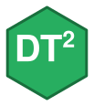

Enable Buttons (extension) and define buttons
Source:R/dt2_options.R
dt2_use_buttons.RdUses the modern DataTables 2.x layout API (not the deprecated dom).
Arguments
- options
Options list.
Vector of button ids (e.g., c("copy","csv","excel","print","colvis")).
- position
Where to place buttons in the layout. One of
"topEnd"(default),"topStart","bottomEnd","bottomStart".CSS class for buttons (e.g.,
"btn btn-sm btn-primary"). IfNULL, uses the theme default ("btn btn-sm btn-outline-secondary"). Applied per-button viaclassName.
See also
dt2_buttons() for a lower-level variant that takes full button
objects and can relocate the buttons container to a custom CSS selector.